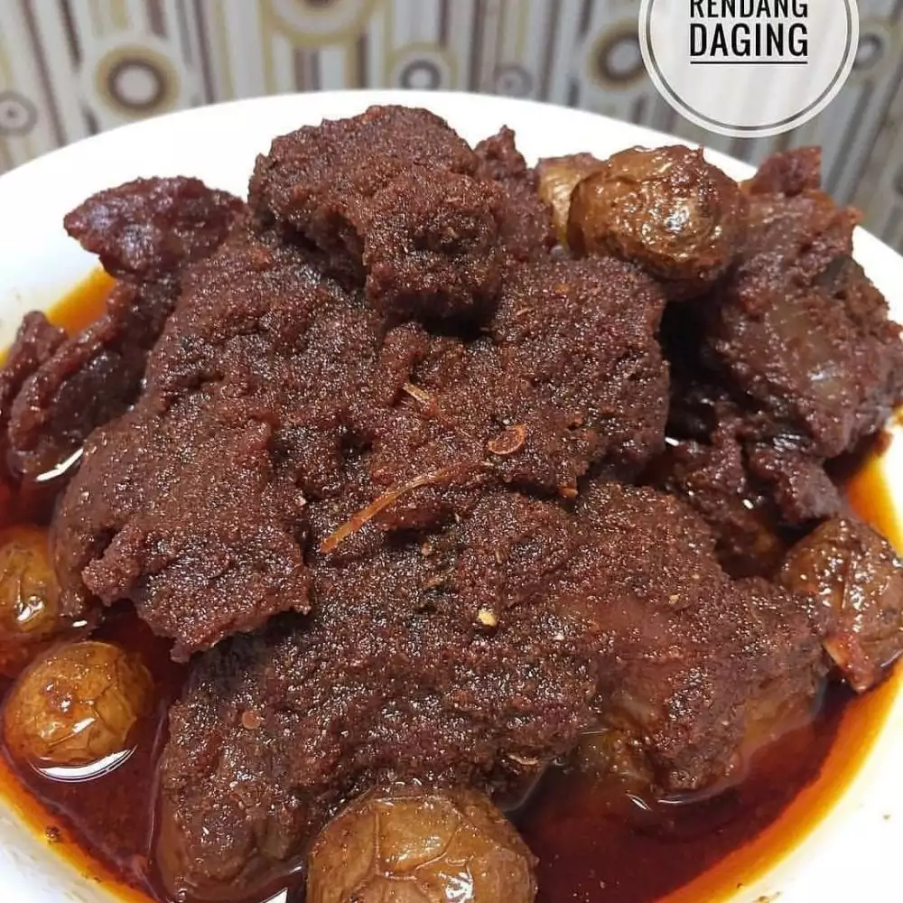

1. Resep bandeng presto balado
- 500 gram ikan bandeng
- 4 sentimeter lengkuas, dimemarkan
- 4 lembar daun salam
- 1 batang serai, dimemarkan
- 3 lembar daun jeruk
- 500 ml minyak goreng
- Air secukupnya
- Daun pisang secukupnya

2. Resep dendeng batokok

- 500 gram daging sapi has luar
- 2 sdm asam jawa
- 1 sdm garam
- Air untuk merebus
cara membuat dendeng batokok
- Campur bumbu halus dengan asam kandis, lalu masukkan campuran bumbu ke dalam dua
liter air kelapa. rebus daging menggunakan api kecil hingga empuk.
- Angkat daging yang sudah empuk lalu pukul-pukul hingga agak tipis.
Kemudian goreng dendeng di dalam minyak panas hingga agak garing.
Sajikan dendeng dengan taburan irisan cabai dan bawang.
3. Resep Rendang daging

- 1 Kg daging sapi
- 2 lembar daun kunyit
- 1 batang sereh
- 4 lembar daun jeruk
- 1 lembar daun salam
- 1 sdm ambu-ambu
- 1 ons cabai giling halus
- 1 kg santa kental
cara membuat rendang daging
- masukan semua bahan dalam satu wajan kecuali daging, kentang dan ambu-ambu
(kelapa kering khas masakan padang)
- aduk sebentar hingga santan sedikit mendidih
- masukan daging dan ambu-ambu
- jika rendang sudah meletup-letup, masukan kentang
- aduk lagi hingga rendang tanak (mengeluarkan minyak) dan rendang menghitam
rumah makan nasi padang